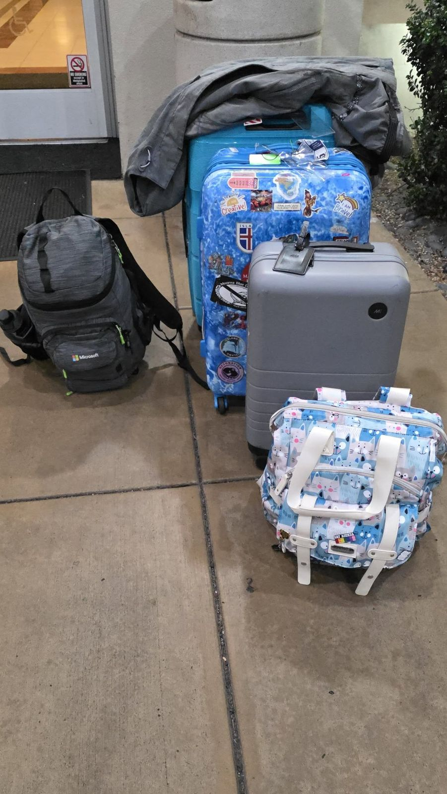
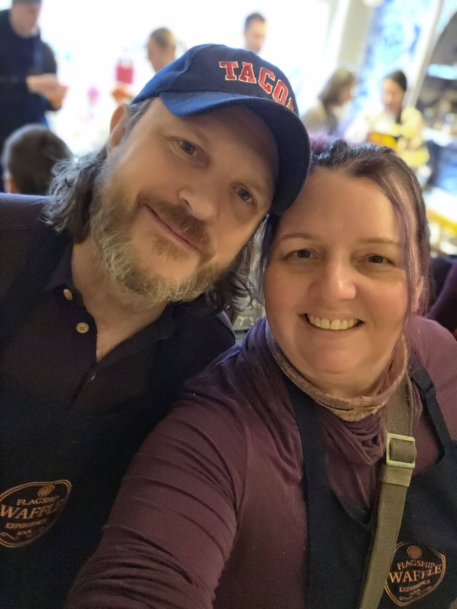
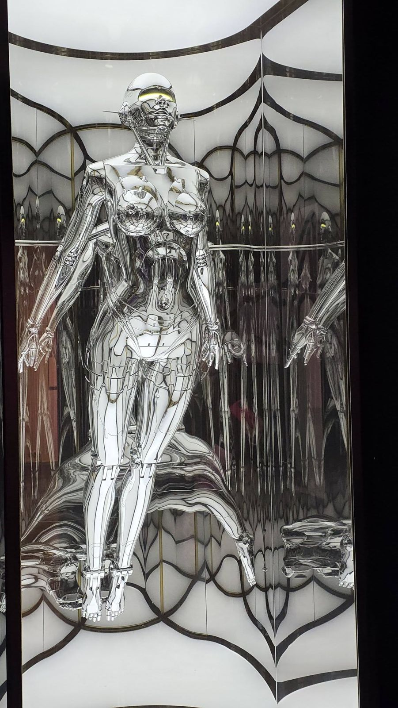
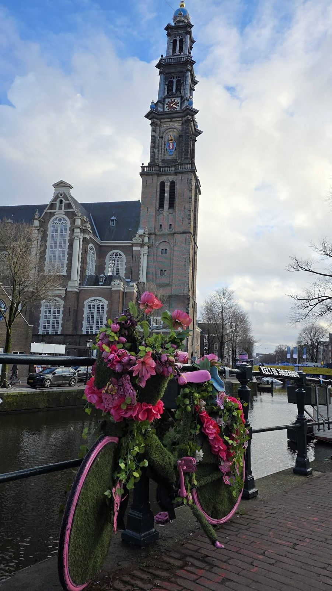
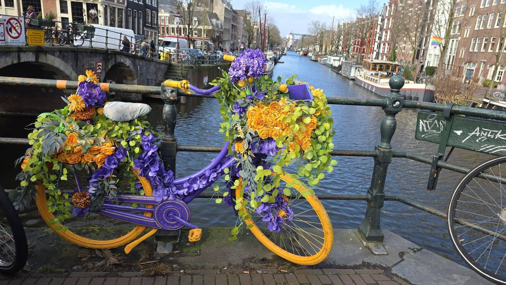
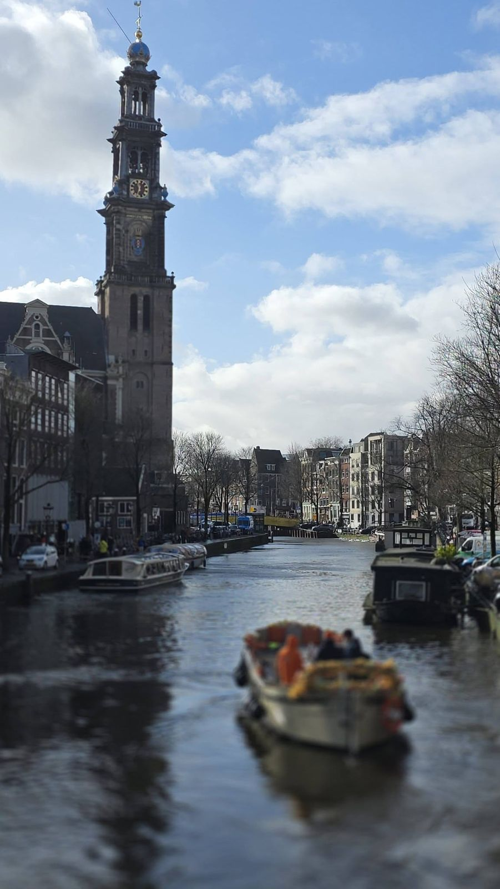
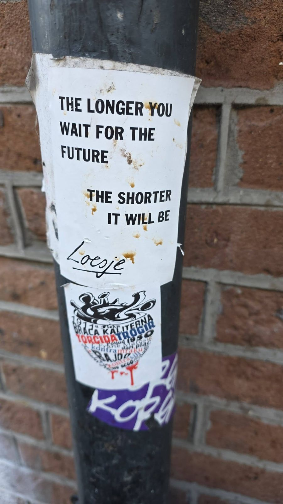
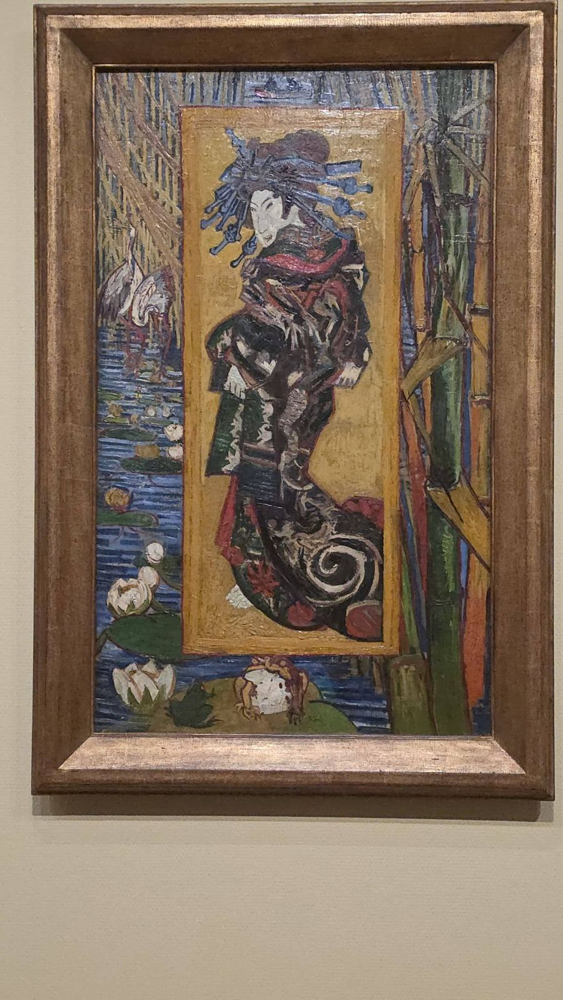
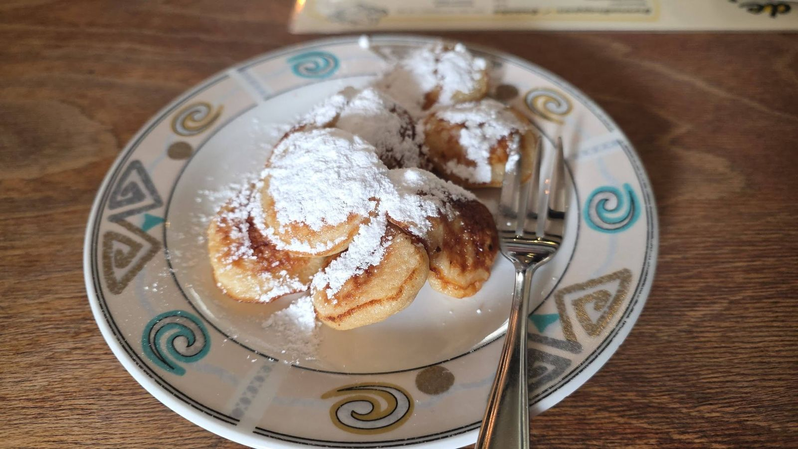
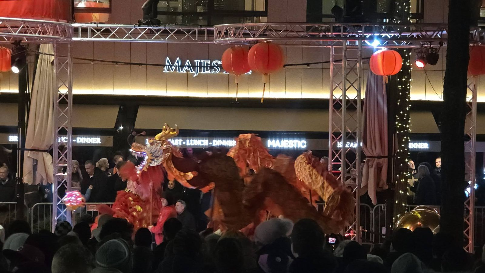

Journey 01 · Timișoara Note 2 of 11 Field Note
The Leaving, the Layover…
The strange thing about big transitions is that you don’t step into them all at once, until all of a sudden, you realize you are already neck deep.
I thought the hardest part would be the logistics: Packing, documents, timing. Making sure I had what I needed. Trying to keep my bags strictly within 50-pound weight limits while still packing for three seasons and half a dozen countries. It turns out the hardest part was much simpler and much heavier than any suitcase: leaving the people I love.
The final week before my flight flew by in a blur of last minute meetings, shopping trips, organization and re-organization, and piles (so many piles) of things I packed, unpacked and packed again. I spent a lot of time trying to consolidate the role of “mom” into an easy checklist, reorganizing the pantry to make dinner planning and snacks easier. Trying to teach disinterested boys (of all ages) how to use a crock pot and air fryer. Grocery shopping and meal prepping. My mantra of the week was “I have time”, saying it over and over again until it wasn’t true any longer… and then I kept saying it.
I finished packing hours before leaving for the airport, and spent those last short few hours of the night cuddling with cats and kids, and trying to stay awake because I was sure that if I fell asleep I would miss my flight.

My spouse was coming with me in what we dubbed “the long goodbye”, staying in Amsterdam with me for my extended layover of two days. I woke him up at 3am, insistent on getting on the road to the airport so we could arrive the recommended 4-hours ahead of our 8am flight.
Airports do something weird to me. They feed into my type-A need for control and I become obsessive about details, time and triple-checking documents and plans. Everything seems to move fast, and yet at the same time, the emotional moments seem slow down. And I was feeling the emotions, all of them, and I did not like it: excitement, intimidation, worry, sadness, glee, anxiety. Even mild annoyance from the lack of open coffee shops so early in the day.
The in-between world of travel
Flights are liminal spaces.
You’re not where you were, and you’re not where you’re going. Your old routines lose their meaning, but your new ones haven’t formed yet. You exist in a tunnel of moving sidewalks, gate announcements, and fuzzy, ever-changing time zones.
Somewhere in that in-between, I realized something that feels obvious but still surprised me: I wasn’t just traveling to a new location. I was traveling into a different version of myself, one that will have to be more flexible, more observant, and more willing to be a beginner in public.
That sounds silly, especially for a seasoned traveler. Like any traveler, a trip means I needed to do things like read signs carefully in different languages, ask for help, not assuming I understand the social rules, and allowing confusion be part of the process. But this trip… felt different, right from the first flight. I looked out my window, watching the sun rise as we passed by Mount Rainier, and tried not to think about the Big Thing ahead of me.
Amsterdam and the unexpected gift of being interrupted by joy
My layover in Amsterdam gave me something I didn’t know I needed: a reminder that not everything meaningful is scheduled. But first, it gave me something just as valuable, and that was time with my significant other.
Having both served in the military over the decades with multiple deployments between us, we generally agreed that it was always easier to be the one leaving than it was to be the one left behind. And this time, not only was I leaving for a long stretch of time, but I was leaving over the week of his birthday and our 22nd anniversary.
“Happy birthday, love. Can you drive me to the airport?”
With the support of my mom, who was staying with my teens, my spouse joined me for a few days in Amsterdam. We had an amazing time, making our own stroopwafels, taking a food tour, visiting museums and walking the city and canals.








We were meandering our way back towards our hotel after a very long day of museums, food and chilly weather, when we stopped at a huge crowds of people. Drums beat, reverberating against the buildings and in our chest. There was palpable excitement, but we were not quite sure what about. A huge crowd of people began chanting something in unison. A song? No… a countdown.
Then fireworks! Drums! Lion dancers and dragons! A giant sign unfurled down the side of a building! In the middle of the city, quite by accident, we had stumbled into a Lunar New Year celebration.
It was the kind of travel moment you can’t plan and could never replicate on purpose. For a little while, I wasn’t thinking about my luggage or my next flight or the million small unknowns. I was just standing on a monument ledge with other people, all of use holding onto each other to keep from falling off as we took turns leaning too far out to take photos. In a cold European city, we all celebrated the lunar new year, surrounded by a dozen languages and dialects, noise, color and community.

Originally published at fieldnotesfromabroad.com/2026/02/24/the-leaving-the-layover/